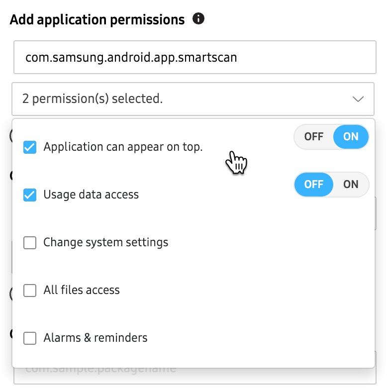

Apps, Widgets, and Content
Last updated October 7th, 2025
These settings allow you to install apps and content on the device during enrollment, restrict the device user’s application usage, customize apps, and configure the default browser.
The following settings and options are available:
Add apps, widgets and content
You can add apps and content to your profile, and have them downloaded to the device during enrollment.
Add an app
To add an app to your profile:
-
Click ADD APP TO PROFILE in the right-panel.
-
On the following page, select any existing apps that you’ve previously added to your Library, or click ADD NEW APPLICTION to upload a new app.
-
If you have an app APK, you can upload it by clicking UPLOAD APPLICATION. Else, you can click ADD FROM GOOGLE PLAY if you know the app’s Google Play URL.
-
Once you have the app APK or URL added, click UPLOAD. On the next page, select the app(s) you want to add to the profile, then click ADD.

Remove an app
After apps are added, you can click the app icon to view its details, or select the app and click ACTIONS > Remove app(s) from profile if you want to remove it from the profile.
Removing an app from a profile does not remove the app from the device. This feature only affects affects devices during the enrollment stage. After a device is enrolled, the app remains on the device even if you remove it from the profile (unless the user uninstalls the app manually).
App permissions
If your devices were uploaded by a reseller, or a Knox MSP with reseller permissions, you can grant third-party app developers the ability to control their apps using APIs.
This feature can only be enabled by a Samsung Admin. If you want to use this feature, please contact your Samsung account representative.
To give third-party app developers remote control access:
- Select the app you want to provide remote control access to.
- Click ACTIONS > App permission(s).
- On the pop-up window, select REMOTE CONTROL for the app(s) you want to grant access to, then click UPDATE.
Add content
To add content like images, documents, videos, and music to your profile, do the following:
- Under Set content folder name, provide a unique name for the folder where content associated with this profile is pushed.
- Under Add files to the Contents folder, select your content to upload.
By default, Knox Configure profiles have a 1 GB size limit, which includes all uploaded apps and content. If your profile exceeds this size limit, try compressing or removing files, then try saving again.
Application restrictions
You can use this setting to disable system apps, or prevent users from installing, uninstalling, or updating apps on their device.
Disable system applications
The following options are available:
- Disable all pre-installed browsers — Disables the internet browsers on the device.
- Disable Google Play store — Prevents the device from accessing the Google Play store to install additional applications.
- Disable S Voice — Disables the S Voice personal assistant on the device. An error may occur if you enable and deploy this setting to a device that does not support S Voice.
Disable the usage of other applications
If you want to disable additional apps, you can enter the package name(s) in the provided field. You can also click ADD CSV FILE to disable apps in bulk.
Application installation restrictions
The following options allow or deny the installation of specific applications:
-
Nothing — No application installation restrictions are applied to devices utilizing this profile.
-
Installation blocklist — Select this option to upload a CSV file of device app package names that the device user is unable to install on their device. An admin can also manually enter the package names to exclude as well. The list of package names is refreshed and updated whenever the policy is updated.
-
Installation allowlist — Select this option to block all other apps except for the ones in this list. Apps not in this list can’t be installed, even if the device user has access to the app store. The list of package names is refreshed and updated whenever the policy is updated.
-
Block applications from unknown sources — Prevents a user from installing apps from sources other than the Google Play store.
Application update restrictions (Dynamic edition only)
The following options allow or deny disabling updates of specific applications:
-
Nothing — No application update restrictions are applied to devices utilizing this profile.
-
Update blocklist — Once an application is added to the update blocklist, it cannot be updated on the device beyond its current version. Upload the app package names through either a CSV file, or by entering them manually. The blocklist is updated whenever the policy is updated.
-
Update allowlist — Once an application is added to the update allowlist, it can be updated to a newer version. Upload the app package names through either a CSV file, or by entering them manually. The blocklist is updated whenever the policy is updated.
Applications notification restrictions (Dynamic edition only)
The following options enable or disable status bar notifications from specific applications. System alerts may not be configured by this feature.
- Nothing — Allow or deny application notification restrictions aren’t applied to system pop-up and status bar notifications.
- Notifications blocklist — List the app package names that you don’t want the device to receive system notifications and pop-ups for.
- Notifications allowlist — List the app package names that you want to allow system notifications and pop-ups for.
Application URL restrictions (Dynamic edition only)
The following options allow or deny URLs for specific applications with domain filtering. This feature is not compatible with all web browsers. We recommend using Samsung Internet, Google Chrome, and Firefox.
- Applications — List the package names of those applications intended for URL restrictions.
- URL blocklist — Provide a blocklist of URLs for the device. For example, you may wish to add non-enterprise websites (social media sites).
- URL allowlist — Provide an allowlist of URLs for the device. Users can only access websites in the allowlist.
- Prevent applications from being uninstalled — Enter the package name(s) of applications that can’t be uninstalled by the end user.
- Prevent applications from being stopped — Prevents applications from being stopped by the system, by other applications, or by the device user. If this option is selected, apps that would normally be stopped under conditions like Battery Saver mode will continue to run and consume battery life.
Customize applications
The following options let you force apps to launch on device startup, edit app permissions, customize apps on the device by changing the app name or icon, and upload contacts to the device.
Launch automatically after configuration
Select the content that automatically displays when the device completes enrollment.
-
Nothing — Select this option if you don’t want any custom applications to launch automatically after the device completes enrollment.
-
Applications — Select the app to launch automatically once the initial profile configuration is set. You can only select this option if you’ve added apps to the profile.
- Select Launch immediately on every boot-up to launch the selected app(s) automatically each time the device is booted.
-
Other content — Select your content to launch automatically after configuration. If you also added content to your content folder, they will appear in the list.
-
If you select content to launch, you’ll also need to enter the package name of the app that you want to use to launch the content. Enter the package name in the Select an application to play the file.
-
Select Launch immediately on every boot-up to launch the selected content automatically each time the device is booted.
-
Download application during configuration
Select apps that would normally downloaded in the background to be downloaded during enrollment. If you added apps to your profile, your any background apps added will appear in the list.
Add application permissions
Add application permissions if they are defined in the app manifest file. To use this field, enter the app package name. If permissions are defined in the app manifest file, you’ll be able to select the permission from the list. Select the app permission you want to add, then toggle the permission on or off.

Device users must accept a EULA for this permission during configuration. For Alarms & reminders, only Android 14 (One UI 6.0 and above) devices are supported. For All files access, only Android 12 (One UI 4.0 and above) devices are supported.
Change application icon
Change an app’s icon by entering the package name of an app you’ve added to profile, then uploading a custom image.
Change application name
Change an app’s displayed name by entering the package name, then entering a custom name.
Add contacts
Create a contacts list on the device by uploading a VCF (Virtual Contact File) file.
Samsung Internet
You can configure the default browser during device enrollment. These settings are also applied to the preloaded Chrome application, but the app may not perform as intended depending on the Chrome browser version. The following options are available.
Set homepage
Enter the URL for the Samsung Internet browser home page.
Add web bookmarks
Add the Title and URL of web bookmarks for the Samsung Internet browser.
Auto fill forms (Dynamic edition only)
You can choose to disable the option for devices to automatically enter information in forms (when using the default Samsung Internet browser). If disabled in the profile, the user cannot turn on this feature in their device settings. To use this feature, select Disable auto fill forms
This feature is only available for devices running Knox 2.7.1 and higher.
On this page
Is this page helpful?